A civilization rooted in nomadic traditions, ancient trade routes, and breathtaking artistry passed down through generations.
A National Symbol Woven in Thread
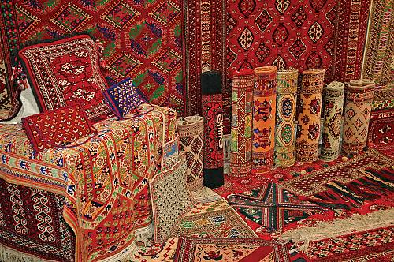
Turkmen carpets are world-famous, and for good reason. A stylized carpet pattern even appears on the national flag! Each of the five major Turkmen tribes has its own distinctive designs and colors, passed down from mother to daughter for generations.
Ashgabat is home to the world's largest hand-made carpet, and Carpet Day is an actual national public holiday. That tells you how much these rugs mean to the people here.
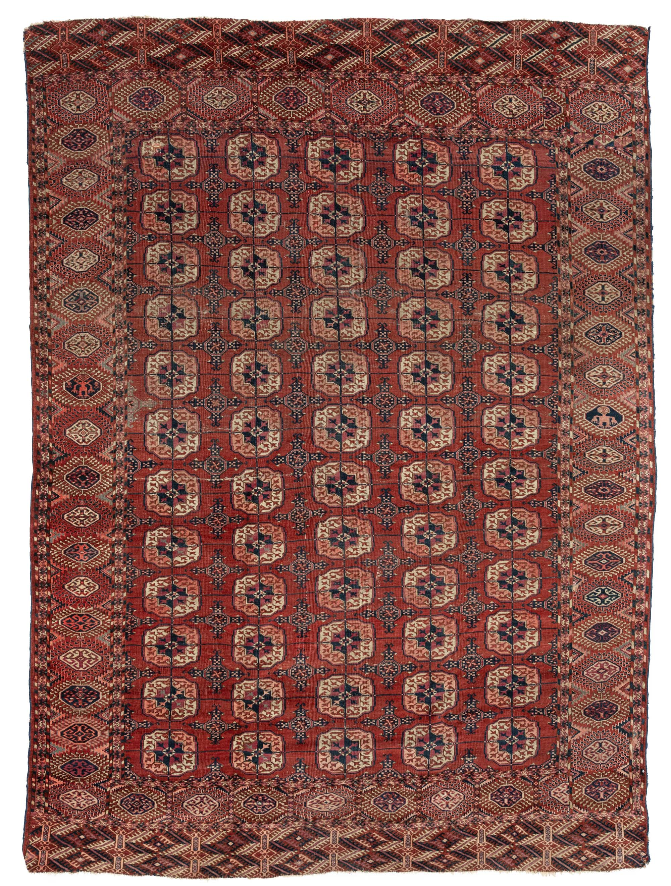
The Tekke are the largest Turkmen tribe, and their carpets are the most recognizable worldwide. Look for the deep crimson background and neat rows of octagonal guls. It's Central Asian weaving at its finest.
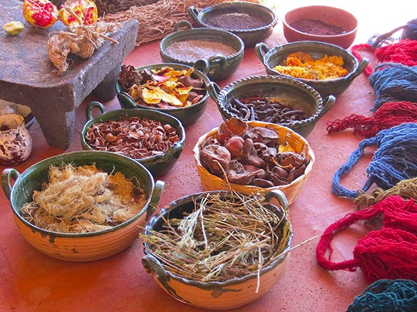
All those rich colors come straight from nature. Pomegranate rind gives yellow, indigo plants give blue, and madder root gives the iconic deep red. Natural dyes create a warmth and depth that synthetic colors simply can't match.
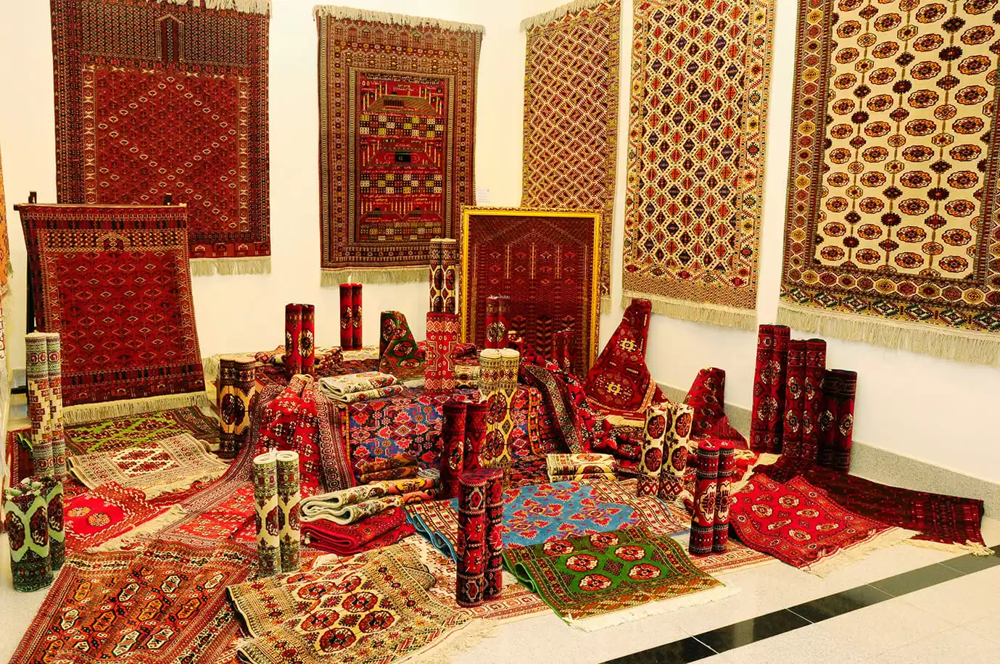
The National Carpet Museum in Ashgabat holds one of the world's best collections of antique Turkmen rugs, some centuries old. The building itself is shaped like a rolled carpet, which is honestly a brilliant design choice.
The Ancient Highway of Civilizations
For over a thousand years, Turkmenistan sat right on the Silk Road, connecting China, Persia, and Rome. Great cities grew up along the route and became thriving centers of trade, scholarship, and culture.
The ancient city of Merv, near the modern city of Mary, was once one of the largest cities on earth before the Mongols swept through in 1221. Today it's a UNESCO World Heritage Site worth every step of the visit.
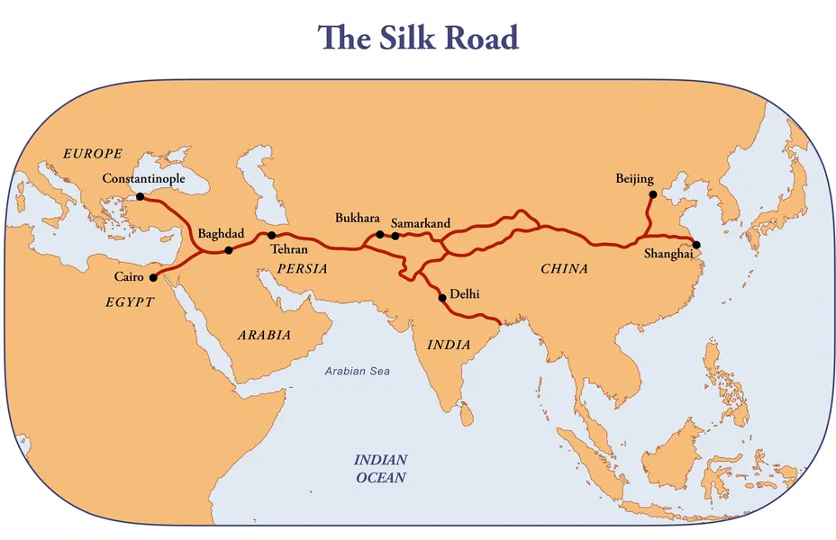
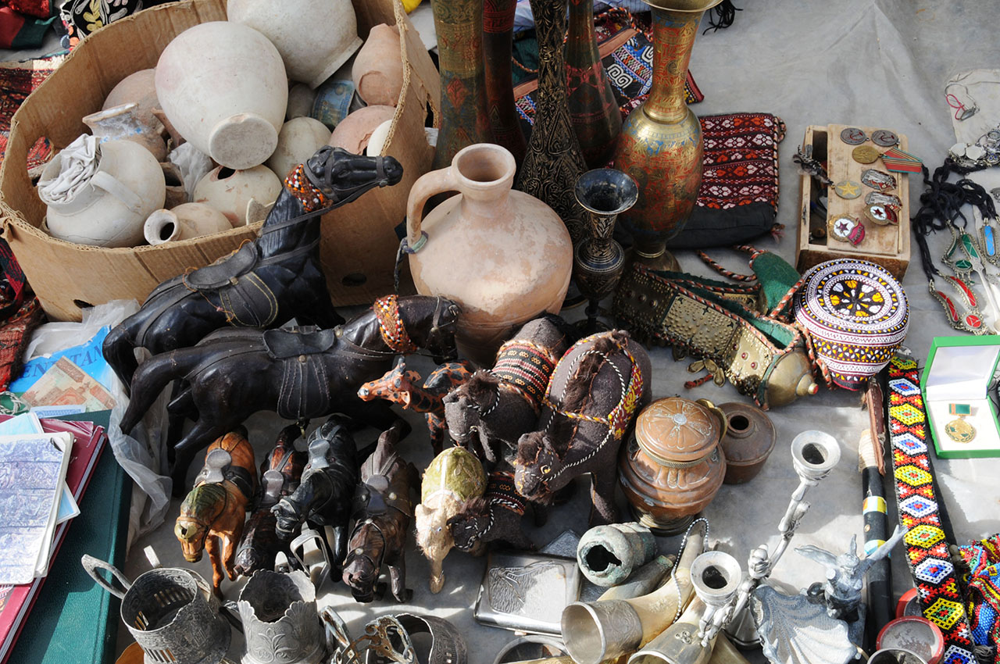
The Silk Road carried far more than goods. Buddhism, Zoroastrianism, and Islam all traveled these routes, blending with local traditions to shape the one-of-a-kind cultural identity Turkmenistan has today.
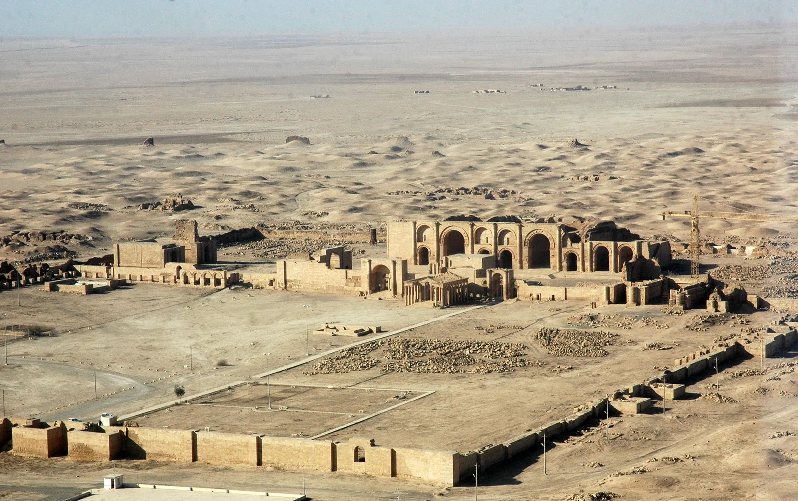
Just outside Ashgabat, the ancient site of Nisa was the first capital of the Parthian Empire. This often-overlooked civilization once stretched from Turkey to Pakistan, leaving behind stunning palace ruins and elaborately carved ivory drinking vessels.
Movement, Music, and Living Heritage
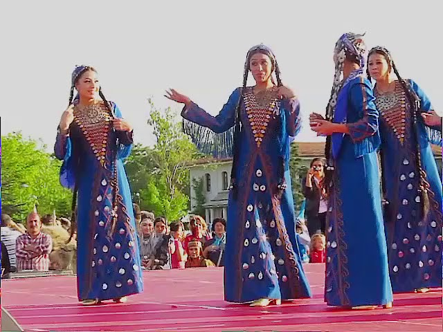
Turkmen traditional dance is expressive, graceful, and full of life. Performances are set to the haunting sound of the dutar (a two-stringed lute) and hand drums, creating music that's unlike anything you've heard before.
Women's dances are flowing and elegant, while men's performances are more energetic, packed with jumps and turns that channel the spirit of horsemen and warriors. Both are wonderful to watch.
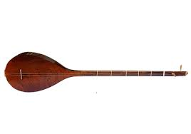
The dutar is a two-stringed lute carved from mulberry wood with a warm, resonant tone. Master players called bagshi are respected cultural figures, and their craft is officially recognized as UNESCO Intangible Cultural Heritage.
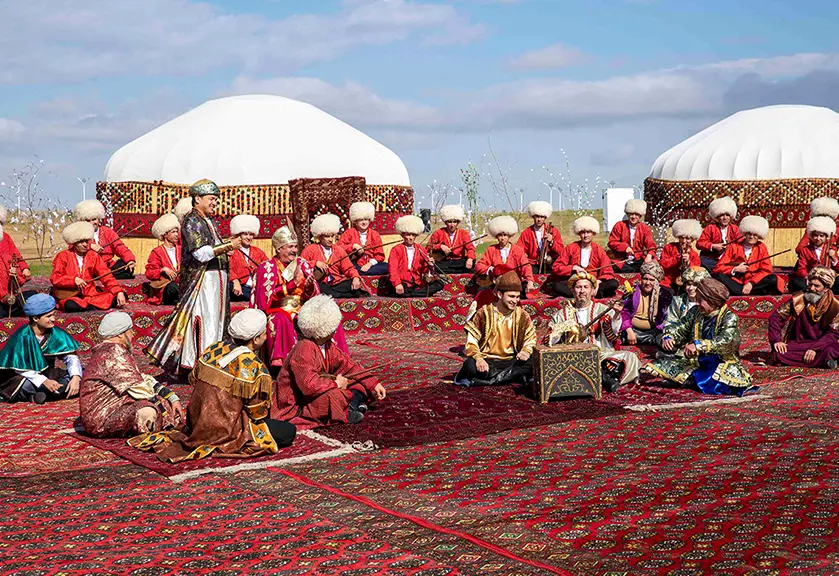
Nowruz, the ancient spring new year on March 21st, is a massive celebration in Turkmenistan. Expect outdoor parties, wrestling competitions, horse races, community feasts, and loads of folk dancing. It's one of the happiest days of the year!
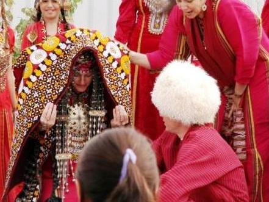
Turkmen weddings are big, multi-day celebrations full of music, dancing, and incredible food. The bride typically wears a stunning red embroidered dress and silver jewelry, with guests dancing late into the night over Plov and Shurpa.